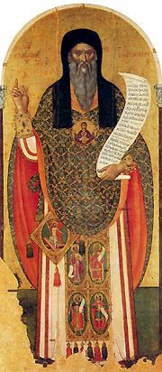

An Exact Exposition of the Orthodox Faith
by St John Damascene
Book 3

<-
BOOK III CHAPTER I
->
Concerning the Divine OEconomy and God's care over us, and concerning our salvation.
MAN, then, was thus snared by the assault of the arch-fiend, and broke his Creator's command, and was stripped of grace and put off his confidence with God, and covered himself with the asperities of a toilsome life (for this is the meaning of the fig-leaves(1)); and was clothed about with death, that is, mortality and the grossness of flesh (for this is what the garment of skins signifies); and was banished from Paradise by God's just judgment, and condemned to death, and made subject to corruption. Yet, notwithstanding all this, in His pity, God, Who gave him his being, and Who in His graciousness bestowed on him a life of happiness, did not disregard man(2). But He first trained him in many ways and called him back, by groans and trembling, by the deluge of water, and the utter destruction of almost the whole race(3), by confusion and diversity of tongues(4), by the rule(5) of angels(6), by the burning of cities(7), by figurative manifestations of God, by wars and victories and defeats, by signs and wonders, by manifold faculties, by the law and the prophets: for by all these means God earnestly strove to emancipate man from the wide-spread and enslaving bonds of sin, which had made life such a mass of iniquity, and to effect man's return to a life of happiness. For it was sin that brought death like a wild and savage beast into the world s to the ruin of the human life. But it behoved the Redeemer to be without sin, and not made liable through sin to death, and further, that His nature should be strengthened and renewed, and trained by labour and taught the way of virtue which leads away from corruption to the life eternal and, in the end, is revealed the mighty ocean of love to man that is about Him(9). For the very Creator and Lord Himself undertakes a struggle(1) in behalf of the work of His own hands, and learns by toil to become Master. And since the enemy snares man by the hope of Godhead, he himself is snared in turn by the screen of flesh, and so are shown at once the goodness and wisdom, the justice and might of God. God's goodness is revealed in that He did not disregard(2) the frailty of His own handiwork, but was moved with compassion for him in his fall, and stretched forth His hand to him: and His justice in that when man was overcome He did not make another victorious over the tyrant, nor did He snatch man by might from death, but in His goodness and justice He made him, who had become through his sins the slave of death, himself once more conqueror and rescued like by like, most difficult though it seemed: and His wisdom is seen in His devising the most fitting solution of the difficulty(3). For by the good pleasure of our God and Father, the Only-begotten Son and Word of God and God, Who is in the bosom of the God and Father(4), of like essence with the Father and the Holy Spirit, Who was before the ages, Who is without beginning and was in the beginning, Who is in the presence of the God and Father, and is God and made in the form of God(5), bent the heavens and descended to earth: that is to say, He humbled without humiliation His lofty station which yet could not be humbled, and condescends to His servants(6), with a condescension ineffable and incomprehensible: (for that is what the descent signifies). And God being perfect becomes perfect man, and brings to perfection the newest of all new things(7), the only new thing under the Sun, through which the boundless might of God is manifested. For what greater thing is there, than that God should become Man? And the Word became flesh without being changed, of the Holy Spirit, and Mary the holy and ever-virgin one, the mother of God. And He acts as mediator between God and man, He the only lover of man conceived in the Virgin's chaste womb without will(8) or desire, or any connection with man or pleasurable generation, but through the
Holy Spirit and the first offspring of Adam. And He becomes obedient to the Father Who is like unto us, and finds a remedy for our disobedience in what He had assumed from us, and became a pattern of obedience to us without which it is not possible to obtain salvation(8).
<-
BOOK III CHAPTER II
->
Concerning the manner in which the Word(9) was conceived, and concerning His divine incarnation.
The angel of the Lord was sent to the holy Virgin, who was descended from David's line(1). Far it is evident that our Lord sprang out of Judah, of which tribe no one turned his attention to the altar(2), as the divine apostle said: but about this we will speak more accurately later. And bearing glad tidings to her, he said, Hail thou highly favoured one, the Lord is with thee(3). And she was troubled at his word, and the angel said to her, Fear not, Mary, for thou hast found favour with God, and shalt bring forth a Son and shalt call His name Jesus(4); for He shall save His people from their sins(5). Hence it comes that Jesus has the interpretation Saviour. And when she asked in her perplexity, How can this be, seeing I know not a man(6)? the angel again answered her, The Holy Spirit shall came upon thee, and the power of the Highest shall overshadow thee. Therefore also that holy thing which shall be born of thee(7) shall be called the Son of God(8). And she said to him, Behold the handmaid of the Lord: be it unto me according to Thy word(9).
So then, after the assent of the holy Virgin, the Holy Spirit descended on her, according to the word of the Lord which the angel spoke, purifying her(1), and granting her power to receive the divinity of the Word, and likewise power to bring forth(2). And then was she overshadowed(3) by the enhypostatic Wisdom and Power of the most high God, the Son of God Who is of like essence with the Father as of Divine seed, and from her holy and most pure blood He formed flesh animated with the spirit of reason and thought, the first-fruits of our compound nature(4): not by procreation but by creation through the Holy Spirit: not developing the fashion of the body by gradual additions but perfecting it at once, He Himself, the very Word of God, standing to the flesh in the relation of subsistence. For the divine Word was not made one with flesh that had an independent pre-existence(5), but taking up His abode in the womb of the holy Virgin, He unreservedly in His own subsistence took upon Himself through the pure blood of the eternal Virgin a body of flesh animated with the spirit of reason and thought, thus assuming to Himself the first-fruits of man's compound nature, Himself, the Word, having become a subsistence in the flesh. So that(6) He is at once flesh, and at the same time flesh of God the Word, and likewise flesh animated, possessing both reason and thought(7). Wherefore we speak not of man as having become God, but of God as having become Man(8). For being by nature perfect God, He naturally became likewise perfect Man: and did not change His nature nor make the dispensation(9) an empty show, but became, without confusion or change or division, one in subsistence with the flesh, which was conceived of the holy Virgin, and animated with reason and thought, and had found existence in Him, while He did not change the nature of His divinity into the essence of flesh, nor the essence of flesh into the nature of His divinity, and did not make one compound nature out of His divine nature and the human nature He had assumed(1).
<-
BOOK III CHAPTER III
->
Concerning Christ's two natures, in apposition to those who hold that He has only one(2).
For the two natures were united with each other without change or alteration, neither the divine nature departing from its native simplicity, nor yet the human being either changed into the nature of God or reduced to non-existence, nor one compound nature being produced out of the two. For the compound nature(3) cannot be of the same essence as either of the natures out of which it is compounded, as made one thing out of others: for example, the body is composed of the four elements, but is not of the same essence as fire or air, or water or earth, nor does it keep these names. If, therefore, after the union, Christ's nature was, as the heretics
hold, a compound unity, He had changed from a simple into a compound nature(4), and is not of the same essence as the Father Whose nature is simple, nor as the mother, who is not a compound of divinity and humanity. Nor will He then be in divinity and humanity: nor will He be called either God or Man, but simply Christ: and the word Christ will be the name not of the subsistence, but of what in their view is the one nature.
We, however, do not give it as our view that Christ's nature is compound, nor yet that He is one thing made of other things and differing from them as man is made of sold and body, or as the body is made of the four elements, but hold(5) that, though He is constituted of these different parts He is yet the same(6). For we confess that He alike in His divinity and in His humanity both is and is said to be perfect God, the same Being, and that He consists of two natures, and exists in two natures(7). Further, by the word "Christ" we understand the name of the subsistence, not in the sense of one kind, but as signifying the existence of two natures. For in His own person He anointed Himself; as God anointing His body with His own divinity, and as Man being anointed. For He is Himself both God and Man. And the anointing is the divinity of His humanity. For if Christ, being of one compound nature, is of like essence to the Father, then the Father also must be compound and of like essence with the flesh, which is absurd and extremely blasphemous(8).
How, indeed, could one and the same nature come to embrace opposing and essential differences? For how is it possible that the same nature should be at once created and uncreated, mortal and immortal, circumscribed and uncircumscribed?
But if those who declare that Christ has only one nature should say also that that nature is a simple one, they must admit either that He is God pure and simple, and thus reduce the incarnation to a mere pretence, or that He is only man, according to Nestorius. And how then about His being "perfect in divinity and perfect in humanity"? And when can Christ be said to be of two natures, if they hold that He is of one composite nature after the union? For it is surely clear to every one that before the union Christ's nature was one.
But this is what leads the heretics(9) astray, viz., that they look upon nature and subsistence as the same thing(1). For when we speak of the nature of men as one(2), observe that in saying this we are not looking to the question of soul and body. For when we compare together the soul and the body it cannot be said that they are of one nature. But since there are very many subsistences of men, and yet all have the same kind of nature(3): for all are composed of soul and body, and all have part in the nature of the soul, and possess the essence of the body, and the common form: we speak of the one nature of these very many and different subsistences; while each subsistence, to wit, has two natures, and fulfils itself in two natures, namely, soul and body.
But(4) a common form cannot be admitted in the case of our Lord Jesus Christ. For neither was there ever, nor is there, nor will there ever be another Christ constituted of deity and humanity, and existing in deity and humanity at once perfect God and perfect man. And thus in the case of our Lord Jesus Christ we cannot speak of one nature made up of divinity and humanity, as we do in the case of the individual made up of soul and body(5). For in the latter case we have to do with an individual, but Christ is not an individual. For there is no predicable form of Christlihood, so to speak, that He possesses. And therefore we hold that there has been a union of two perfect natures, one divine and one human; not with disorder or confusion, or intermixture(6), or commingling, as is said by the God-accursed Dioscorus and by Eutyches(7) and Severus, and all that impious company: and not in a personal or relative manner, or as a matter of dignity or agreement in will, or equality in honour, or identity in name, or good pleasure, as Nestorius, hated of God, said, and Diodorus and Theodorus of Mopsuestia, and their diabolical tribe: but by synthesis; that is, in subsistence, without change or confusion or alteration or difference or separation, and we confess that in two perfect natures there is but one subsistence of the Son of God incarnate(8); holding that there is one and the same subsistence belong-
ing to His divinity and His humanity, and granting that the two natures are preserved in Him after the union, but we do not hold that each is separate and by itself, but that they are united to each other in one compound subsistence. For we look upon the union as essential, that is, as true and not imaginary. We say that it is essential(9), moreover, not in the sense of two natures resulting in one compound nature, but in the sense of a true union of them in one compound subsistence of the Son of God, and we hold that their essential difference is preserved. For the created remaineth created, and the uncreated, uncreated: the mortal remaineth mortal; the immortal, immortal: the circumscribed, circumscribed: the uncircumscribed, uncircumscribed: the visible, visible: the invisible, invisible. "The one part is all glorious with wonders: while the other is the victim of insults(1)."
Moreover, the Word appropriates to Himself the attributes of humanity: for all that pertains to His holy flesh is His: and He imparts to the flesh His own attributes by way of communication(2) in virtue of the interpenetration of the parts(3) one with another, and the oneness according to subsistence, and inasmuch as He Who lived and acted both as God and as man, taking to Himself either form and holding intercourse with the other form, was one and the same(4). Hence it is that the Lord of Glory is said to have been crucified(5), although His divine nature never endured the Cross, and that the Son of Man is allowed to have been in heaven before the Passion, as the Lord Himself said(6). For the Lord of Glory is one and the same with Him Who is in nature and in truth the Son of Man, that is, Who became man, and both His wonders and His sufferings are known to us, although His wonders were worked in His divine capacity, and His sufferings endured as man. For we know that, just as is His one subsistence, so is the essential difference of the nature preserved. For how could difference be preserved if the very things that differ from one another are not preserved? For difference is the difference between things that differ. In so far as Christ's natures differ from one another, that is, in the matter of essence, we hold that Christ unites in Himself two extremes: in respect of His divinity He is connected with the Father and the Spirit, while in respect of His humanity He is connected with His mother and all mankind. And in so far as His natures are united, we hold that He differs from the Father and the Spirit on the one hand, and from the mother and the rest of mankind on the other. For the natures are united in His subsistence, having one compound subsistence, in which He differs from the Father and the Spirit, and also from the mother and us.
<-
BOOK III CHAPTER IV
->
Concerning the manner of the Mutual Communication(8).
Now we have often said already that essence is one thing and subsistence another, and that essence signifies the common and general form(9) of subsistences of the same kind, such as God, man, while subsistence marks the individual, that is to say, Father, Son, Holy Spirit, or Peter, Paul. Observe, then, that the names, divinity and humanity, denote essences or natures: while the names, God and man, are applied both in connection with natures, as when we say that God is incomprehensible essence, and that God is one, and with reference to subsistences, that which is more specific having the name of the more general applied to it, as when the Scripture says, Therefore God, thy God, hath anointed thee(1), or again, There was a certain man in the land of Uz(2), for it was only to Job that reference was made.
Therefore, in the case of our Lord Jesus Christ, seeing that we recognise that He has two natures but only one subsistence compounded of both, when we contemplate His natures we speak of His divinity and His humanity, but when we contemplate the subsistence compounded of the natures we sometimes use terms that have reference to His double nature, as "Christ," and "at once God and man," and "God Incarnate;" and sometimes those that imply only one of His natures, as "God" alone, or "Son of God," and "man" alone, or "Son of Man;" sometimes using names that imply His loftiness and sometimes those that imply His lowliness. For He Who is alike God and man is one, being the former from the Father ever without(3) cause, but having become the latter afterwards for His love towards man(4).
When, then, we speak of His divinity we do not ascribe to it the properties of humanity. For we do not say that His divinity is subject to passion or created. Nor, again, do we predicate of His flesh or of His humanity the properties of divinity: for we do not say that His flesh or His humanity is uncreated. But when we speak of His subsistence, whether we give it a name implying both natures, or one that refers to only one of them, we still attribute to it the properties of both natures. For Christ, which name implies both natures, is spoken of as at once God and man, created and uncreated, subject to suffering anti incapable of suffering: and when He is named Son of God and God, in reference to only one of His natures, He still keeps the properties of the co-existing nature, that is, the flesh, being spoken of as God who suffers, and as the Lord of Glory crucified(5), not in respect of His being God but in respect of His being at the same time man. Likewise also when He is called Man and Son of Man, He still keeps the properties and glories of the divine nature, a child before the ages, and man who knew no beginning; it is not, however, as child or man but as God that He is before the ages, and became a child in the end. And Ibis is the manner of the mutual communication, either nature giving in exchange to the other its own properties through the identity of the subsistence and the interpenetration of the parts with one another. Accordingly we can say of Christ: This our God was seen upon the earth and lived amongst men(6), and This man is uncreated and impossible and uncircumscribed.
<-
BOOK III CHAPTER V
->
Concerning the number of the Natures.
In the case, therefore, of the Godhead(7) we confess that there is but one nature, but hold that there are three subsistences actually existing, anti hold that all things that are of nature and essence are simple, and recognise the difference of the subsistences only in the three properties of independence of cause and Fatherhood, of dependence on cause and Sonship, of dependence on cause and procession(8). And we know further that these are indivisible and inseparable from each other and united into one, and interpenetrating one another without confusion. Yea, I repeat, united without confusion, for they are three although united, and they are distinct, although inseparable. For although each has an independent existence, that is to say, is a perfect subsistence and has an individuality of its own, that is, has a special mode of existence, yet they are one in essence and in the natural properties. and in being inseparable and indivisible from the Father's subsistence, and they both are and are said to be one God. In the very same way, then, in the case of the divine and ineffable dispensation(9), exceeding all thought and comprehension, I mean the Incarnation of the One God the Word of the Holy Trinity, and our Lord Jesus Christ, we confess that there are two natures, one divine and one human, joined together with one another and united in subsistence(1), so that one compound subsistence is formed out of the two natures: but we hold that the two natures are still preserved, even after the union, in the one compound subsistence, that is, in the one Christ, and that these exist in reality and have their natural properties; for they are united without confusion, and are distinguished and enumerated without being separable. And just as the three subsistences of the Holy Trinity are united without confusion, and are distinguished and enumerated without being separable(2), the enumeration not entailing division or separation or alienation or cleavage among them (for we recognise one God the Father, the Son and the Holy Spirit), so in the same way the natures of Christ also, although they are united, yet are united without confusion; and although they interpenetrate one another, yet they do not permit of change or transmutation of one into the other(3). For each keeps its own natural individuality strictly unchanged. And thus it is that they can be enumerated without the enumeration introducing division. For Christ, indeed, is one, perfect both in divinity and in humanity. For it is not the nature of number to cause separation or unity, but its nature is to indicate the quantity of what is enumerated, whether these are united or separated: for we have unity, for instance, when fifty stones compose a wall, but we have separation when the fifty stones lie on the ground; and again, we have unity when we speak of coal having two natures, namely, fire and wood, but we have separation in that the nature of fire is one thing, and the nature of wood another thing;
for these things are united and separated not by number, but in another way. So, then, just as even though the three subsistences of the Godhead are united with each other, we cannot speak of them as one subsistence because we should confuse and do away with the difference between the subsistences, so also we cannot speak of the two natures of Christ as one nature, united though they are in subsistence, because we should then confuse and do away with and reduce to nothing the difference between the two natures.
<-
BOOK III CHAPTER VI
->
That in one of its subsistences the divine nature is united in its entirety to the human nature, in its entirety and not only part to part.
What is common and general is predicated of the included particulars. Essence, then, is common as being a form(4), while subsistence is particular. It is particular not as though it had part of the nature and had not the rest, but particular in a numerical sense, as being individual. For it is in number and not in nature that the difference between subsistences is said to lie. Essence, therefore, is predicated of subsistence, because in each subsistence of the same form the essence is perfect. Wherefore subsistences do not differ from each other in essence but in the accidents which indeed are the characteristic properties, but characteristic of subsistence and not of nature. For indeed they define subsistence as essence along with accidents. So that the subsistence contains both the general and the particular, and has an independent existence(5), while essence has not an independent existence but is contemplated in the subsistences. Accordingly when one of the subsistences suffers, the whole essence, being capable of suffering(6), is held to have suffered in one of its subsistences as much as the subsistence suffered, but it does not necessarily follow, however, that all the subsistences of the same class should suffer along with the suffering subsistence.
Thus, therefore, we confess that the nature of the Godhead is wholly and perfectly in each of its subsistences, wholly in the Father, wholly in the Son, and wholly in the Holy Spirit. Wherefore also the Father is perfect God, the Son is perfect God, and the Holy Spirit is perfect God. In like manner, too, in the Incarnation of the Trinity of the One God the Word of the Holy Trinity, we hold that in one of its subsistences the nature of the Godhead is wholly and perfectly united with the whole nature of humanity, and not part united to part(7). The divine Apostle in truth says that in Him dwelleth all the fulness of the Godhead bodily(8), that is to say in His flesh. And His divinely-inspired disciple, Dionysius, who had so deep a knowledge of things divine, said that the Godhead as a whole had fellowship with us in one of its own subsistences(9). But we shall not be driven to hold that all the subsistences of the Holy Godhead, to wit the three, are made one in subsistence with all the subsistences of humanity. For in no other respect did the Father and the Holy Spirit take part in the incarnation of God the Word than according to good will and pleasure But we hold that to the whole of human nature the whole essence of the Godhead was united. For God the Word omitted none of the things which He implanted in our nature when He formed us in the beginning, but took them all upon Himself, body and soul both intelligent and rational, and all their properties. For the creature that is devoid of one of these is not man. But He in His fulness took upon Himself me in my fulness, and was united whole to whole that He might in His grace bestow salvation on the whole man. For what has not been taken cannot be healed(1).
The Word of God(2), then, was united to flesh through the medium of mind which is intermediate between the purity of God and the grossness of flesh(3). For the mind holds sway over soul and body, but while the mind is the purest part of the soul God is that of the mind. And when it is allowed(4) by that which is more excellent, the mind of Christ gives proof of its own authority(5), but it is under the dominion of and obedient to that which is more excellent, and does those things which the divine will purposes.
Further the mind has become the seat of the divinity united with it in subsistence, just as is evidently the case with the body too, not as an inmate(6), which is the impious error into which the heretics fall when they say that one bushel cannot contain two bushels, for they are judging what is immaterial by material standards. How indeed could Christ be called perfect God and perfect man, and be said to be of like essence with the Father and
with us, if only part of the divine nature is joined in Him to part of the human nature(7)?
We hold, moreover, that our nature has been raised from the dead and has ascended to the heavens and taken its seat at the right hand of the Father: not that all the persons of men have risen from the dead and taken their seat at the right hand of the Father, but that this has happened to the whole of our nature in the subsistence of Christ(8). Verily the divine Apostle says, God hath raised us up together and made us sit together in Christ(9).
And this further we hold, that the union took place through common essences. For every essence is common to the subsistences contained in it, and there cannot be found a partial and particular nature, that is to say, essence: for otherwise we would have to hold that the same subsistences are at once the same and different in essence, and that the Holy Trinity in respect of the divinity is at once the same and different in essence. So then the same nature is to be observed in each of the subsistences, and when we said that the nature of the word became flesh, as did the blessed Athanasius and Cyrillus, we mean that the divinity was joined to the flesh. Hence we cannot say "The nature of the Word suffered;" for the divinity in it did not suffer, but we say that the human nature, not by any means, however, meaning(1) all the subsistences of men, suffered in Christ, and we confess further that Christ suffered in His human nature. So that when we speak of the nature of the Word we mean the Word Himself. And the Word has both the general element of essence and the particular element of subsistence.
<-
BOOK III CHAPTER VII
->
Concerning the one compound subsistence of God the Word.
We hold then that the divine subsistence of God the Word existed before all else and is without time and eternal, simple and uncompound, uncreated, incorporeal, invisible, intangible, uncircumscribed, possessing all the Father possesses, since He is of the same essence with Him, differing from the Father's subsistence in the manner of His generation and the relation of the Father's subsistence, being perfect also and at no time separated from the Father's subsistence: and in these last. days, without leaving the Father's bosom, took up His abode in an uncircumscribed manner in the womb of the holy Virgin, without the instrumentality of seed, and in an incomprehensible manner known only to Himself, and causing the flesh derived from the holy Virgin to subsist in the very subsistence that was before all the ages.
So then He was both in all things and above all things and also dwelt in the womb of the holy Mother of God, but in it by the energy of the incarnation. He therefore became flesh and He took upon Himself thereby the first-fruits of our compound nature(2), viz., the flesh animated with the intelligent and national soul, so that the very subsistence of God the Word was changed into the subsistence of the flesh, and the subsistence of the Word, which was formerly simple, became compound(3), yea compounded of two perfect natures, divinity and humanity, and bearing the characteristic and distinctive property of the divine Sonship of God the Word in virtue of which it is distinguished from the Father and the Spirit, and also the characteristic and distinctive properties of the flesh, in virtue of which it differs from the Mother and the rest of mankind, bearing further the properties of the divine nature in virtue of which it is united to the Father and the Spirit, and the marks of the human nature in virtue of which it is united to the Mother and to us. And further it differs from the Father and the Spirit and the Mother and us in being at once God and man. For this we know to be the most special property of the subsistence of Christ.
Wherefore we confess Him, even after the incarnation, the one Son of God, and likewise Son of Man, one Christ, one Lord, the only-begotten Son and Word of God, one Lord Jesus. We reverence His two generations, one from the Father before time and beyond cause and reason and time and nature, and one in the end for our sake, and like to us and above us; for our sake because it was for our salvation, like to us in that He was man born of woman(4) at full tithe(5), and above us because it was not by seed, but by the Holy Spirit and the Holy Virgin Mary(6), transcending the laws of parturition. We proclaim Him not as God only, devoid of our humanity, nor yet as man only, stripping Him of His divinity, nor as two distinct persons, but as one and the same, at once God and man, perfect God and perfect man, wholly God anti wholly man, the same being wholly God, even though He was also
flesh and wholly man, even though He was also most high God. And by "perfect God" and "perfect man" we mean to emphasize the fulness and unfailingness of the natures: while by "wholly God" and "wholly man" we mean to lay stress on the singularity and individuality of the subsistence.
And we confess also that there is one incarnate nature of God the Word, expressing by the word "incarnate(7)" the essence of the flesh, according to the blessed Cyril(8). And so the Word was made flesh and yet did not abandon His own proper immateriality: He became wholly flesh and yet remained wholly uncircumscribed. So far as He is body He is diminished and contracted into narrow limits, but inasmuch as He is God He is uncircumscribed, His flesh not being coextensive with His uncircumscribed divinity.
He is then wholly perfect God, but yet is not simply(9) God: for He is not only God but also man. And He is also wholly(1) perfect man but not simply(2) man, for He is not only man but also God. For "simply(2)" here has reference to His nature, and "wholly(1)" to His subsistence, just as "another thing" would refer to nature, while "another(3)" would refer to subsistence(4).
But observe(5) that although we hold that the natures of the Lord permeate one another, yet we know that the permeation springs from the divine nature. For it is that that penetrates and permeates all things, as it wills, while nothing penetrates it: and it is it, too, that imparts to the flesh its own peculiar glories, while abiding itself impossible and without participation in the affections of the flesh. For if the sun imparts to us his energies and yet does not participate in ours, how much the rather must this be true of the Creator anti Lord of the Sun(6).
<-
BOOK III CHAPTER VIII
->
In reply to those who ask whether(7) the natures of the Lord are brought under a continuous or a discontinuous quantity(8).
If any one asks concerning the natures of the Lord if they are brought under a continuous or discontinuous quantity(9), we will say that the natures of the Lord are neither one body nor one superficies(1), nor one line, nor time, nor place, so as to be reduced to a continuous quantity. For these are the things that are reckoned continuously.
Further note that number deals with things that differ, and it is quite impossible to enumerate things that differ from one another in no respect: and just so far as they differ are they enumerated: for instance, Peter and Paul are not counted separately in so far as they are one. For since they are one in respect of their essence they cannot be spoken of as two natures, but as they differ in respect of subsistence they are spoken of as two subsistences. So that number deals with differences, and just as the differing objects differ from one another so far they are enumerated.
The natures of the Lord, then, are united without confusion so far as regards subsistence, and they are divided without separation according to the method and manner of difference. And it is not according to the manner in which they are united that they are enumerated, for it is not in respect of subsistence that we hold that there are two natures of Christ: but according to the manner in which they are divided without separation they are enumerated, for it is in respect of the method and manner of difference that there are two natures of Christ. For being united in subsistence and permeating one another, they are united without confusion, each preserving throughout its own peculiar and natural difference. Hence, since they are enumerated according to the manner of difference, and that alone, they must be brought under a discontinuous quantity.
Christ, therefore(2), is one, perfect God and perfect man: and Him we worship along with the Father and the Spirit, with one obeisance, adoring even His immaculate flesh and not holding that the flesh is not meet for worship: for in fact it is worshipped in the one subsistence of the Word, which indeed became subsistence for it. But in this we do not do homage to that which is created. For we worship Him, not as mere flesh, but as flesh united with divinity, and because His two natures are brought under the one person and one subsistence of God the Word. I fear to touch coal because of the fire bound up with the wood. I worship the twofold nature of Christ because of the divinity that is in Him bound up with flesh. For I do not
introduce a fourth person(3) into the Trinity. God forbid! but I confess one person of God the Word and of His flesh, and the Trinity remains Trinity, even after the incarnation of the Word.
In reply(4) to those who ask whether the two natures are brought under a continuous or a discontinuous quantity.
The natures of the Lord are neither one body nor one superficies, nor one line, nor place, nor time, so as to be brought under a continuous quantity: for these are the things that are reckoned continuously. But the natures of the Lord are united without confusion in respect of subsistence, and are divided without separation according to the method and manner of difference. And according to the manner in which they are united they are not enumerated. For we do not say that the natures of Christ are two subsistences or two in respect of subsistence. But according to the manner in which they are divided without division, are they enumerated. For there are two natures according to the method and manner of difference. For being united in subsistence and permeating one another they are united without confusion, neither having been changed into the other, but each preserving its own natural difference even after the union. For that which is created remained created, and that which is uncreated, uncreated. By the manner of difference, then, and in that alone, they are enumerated, and thus are brought under discontinuous quantity. For things which differ from each other in no respect cannot be enumerated, but just so far as they differ are they enumerated; for instance, Peter and Paul are not enumerated in those respects in which they are one: for being one in respect of their essence they are not two natures nor are they so spoken of. But inasmuch as they differ in subsistence they are spoken of as two subsistences.So that difference is the cause of number.
<-
BOOK III CHAPTER IX
->
In reply to the question whether there is Nature that has no Subsistence.
For although(5) there is no nature without subsistence, nor essence apart from person (since in truth it is in persons and subsistences that essence and nature are to be contemplated), yet it does not necessarily follow that the natures that are united to one another in subsistence should have each its own proper subsistence. For after they have come together into one subsistence, it is possible that neither should they be without subsistence, nor should each have its own peculiar subsistence, but that both should have one and the same subsistence(6). For since one and the same subsistence of the Word has become the subsistence of the natures, neither of them is permitted to be without subsistence, nor are they allowed to have subsistences that differ from each other, or to have sometimes the subsistence of this nature and sometimes of that, but always without division or separation they both have the same subsistence--a subsistence which is not broken up into parts or divided, so that one part should belong to this, and one to that, but which belongs wholly to this and wholly to that in its absolute entirety. For the flesh of God the Word did not subsist as an independent subsistence, nor did there arise another subsistence besides that of God the Word, but as it existed in that it became rather a subsistence which subsisted in another, than one which was an independent subsistence. Wherefore, neither does it lack subsistence altogether, nor yet is there thus introduced into the Trinity another subsistence.
<-
BOOK III CHAPTER X
->
Concerning the Trisagium ("the Thrice Holy").
This being so(7), we declare that the addition which the vain-minded Peter the Fuller made to the Trisagium or "Thrice Holy" Hymn is blasphemous(8); for it introduces a fourth person into the Trinity, giving a separate place to the Son of God, Who is the truly subsisting power of the Father, and a separate place to Him Who was crucified as though He were different from the "Mighty One," or as though the Holy Trinity was considered possible, and the Father and the Holy Spirit suffered on the Cross along with the Son. Have done with this blasphemous(9) and nonsensical interpolation! For we hold the words "Holy God" to refer to the Father, without limiting the title of divinity to Him alone, but acknowledging also as God the Son and the Holy Spirit: and the words
"Holy and Mighty" we ascribe to the Son, without stripping the Father and the Holy Spirit of might: and the words "Holy and Immortal" we attribute to the Holy Spirit, without depriving the Father and the Son of immortality. For, indeed, we apply all the divine names simply and unconditionally to each of the subsistences in imitation of the divine Apostle's words. But to us there is but one God, the Father, of Whom are all things, and we in Him: and one Lord Jesus Christ by Whom are all things, and we by Him(1)(2) And, nevertheless, we follow Gregory the Theologian(3) when he says, "But to us there is but one God, the Father, of Whom are all things, and one Lord Jesus Christ, through Whom are all things, and one Holy Spirit, in Whom are all things:" for the words "of Whom" and "through Whom" and "in Whom" do not divide the natures (for neither the prepositions nor the order of the names could ever be changed), but they characterise the properties of one unconfused nature. And this becomes clear from the fact that they are once more gathered into one, if only one reads with care these words of the same Apostle, Of Him and through Him and in Him are all things: to Him be the glory for ever and ever. Amen(4).
For that the "Trisagium" refers not to the Son alone(5), but to the Holy Trinity, the divine and saintly Athanasius and Basil and Gregory, and all the band of the divinely-inspired Fathers bear witness: because, as a matter of fact, by the threefold holiness the Holy Seraphim suggest to us the three subsistences of the superessential Godhead. But by the one Lordship they denote the one essence and dominion of the supremely-divine Trinity. Gregory the Theologian of a truth says(6), "Thus, then, the Holy of Holies, which is completely veiled by the Seraphim, and is glorified with three consecrations, meet together in one lordship and one divinity." This was the most beautiful and sublime philosophy of still another of our predecessors.
Ecclesiastical historians(7), then, say that once when the people of Constantinople were offering prayers to God to avert a threatened calamity(8), during Proclus' tenure of the office of Archbishop, it happened that a boy was snatched up from among the people, and was taught by angelic teachers the "Thrice Holy" Hymn, "Thou Holy God, Holy and Mighty One, Holy and Immortal One, have mercy upon us:" and when once more he was restored to earth, he told what he had learned, and all the people sang the Hymn, and so the threatened calamity was averted. And in the fourth holy and great (Ecumenical Council, I mean the one at Chalcedon, we are told that it was in this form that the Hymn was sung; for the minutes of this holy assembly so record it(9). It is, therefore, a matter for laughter and ridicule that this "Thrice Holy" Hymn, taught us by the angels, and confirmed by the averting of calamity(1), ratified and established by so great an assembly of the holy Fathers, and sung first by the Seraphim as a declaration of the three subsistences of the Godhead, should be mangled and forsooth emended to suit the view of the stupid Fuller as though he were higher than the Seraphim. But oh! the arrogance! not to say folly! But we say it thus, though demons should rend us in pieces, "Do Thou, Holy God, Holy and Mighty One, Holy and Immortal One, have mercy upon us."
<-
BOOK III CHAPTER XI
->
Concerning the Nature as viewed in Species and in Individual, and concerning the difference between Union and Incarnation: and how this is to be understood, "The one Nature of God the Word Incarnate.
Nature(2) is regarded either abstractly as a matter of pure thought(3) (for it has no independent existence): or commonly in all subsistences of the same species as their bond of union, and is then spoken of as nature viewed in species: or universally as the same, but with the addition of accidents, in one subsistence, and is spoken of as nature viewed in the individual, this being identical with nature viewed in species(4). God the Word Incarnate, therefore, did not assume the nature that is regarded as an abstraction in pure thought (for tiffs is not incarnation, but only an imposture and a figment of incarnation), nor the nature viewed in species (for He did not
assume all the subsistences): but the nature viewed in the individual, which is identical with that viewed in species. For He took on Himself the elements of our compound nature, and these not as having an independent existence or as being originally an individual, and in this way assumed by Him, but as existing in His own subsistence. For the subsistence of God the Word in itself became the subsistence of the flesh, and accordingly "the Word became flesh(5)" clearly without any change, and likewise the flesh became Word without alteration, and God became man. For the Word is God, and man is God, through having one and the same subsistence. And so it is possible to speak of tile same thing as being the nature of the Word and the nature in the individual. For it signifies strictly and exclusively neither the individual, that is, the subsistence, nor the common nature of the subsistences, but the common nature as viewed and presented in one of the subsistences.
Union, then, is one thing, and incarnation is something quite different. For union signifies only the conjunction, but not at all that with which union is effected. But incarnation (which is just the same as if one said "the putting on of man's nature") signifies that tile conjunction is with flesh, that is to say, with man, just as the heating of iron(6) implies its union with fire. Indeed, the blessed Cyril himself, when he is interpreting the phrase, "one nature of God the Word Incarnate," says in the second epistle to Sucensus, "For if we simply said 'the one nature of the Word' and then were silent, and did not add the word 'incarnate.' but, so to speak, quite excluded the dispensation(7), there would be some plausibility in the question they feign to ask, 'If one nature is the whole, what becomes of the perfection in humanity, or how has the essence(8) like us come to exist?' But inasmuch as the perfection in humanity and the disclosure of the essence like us are conveyed in the word 'incarnate,' they must cease from relying on a mere straw" Here, then, he placed the nature of the Word over nature itself. For if He had received nature instead of subsistence, it would not have been absurd to have omitted the "incarnate." For when we say simply one subsistence of God the Word, we do not err(9). In like manner, also, Leontius the Byzantine(1) considered this phrase to refer to nature, and not to subsistence. But in the Defence which he wrote in reply to the attacks that Theodoret made on the second anathema, the blessed Cyril(2) says this: "The nature of the Word, that is, the subsistence, which is the Word itself." So that "the nature of the Word" means neither the subsistence alone, nor "the common nature of the subsistence," but "the common nature viewed as a whole in the subsistence of the Word."
It has been said, then, that the nature of the Word became flesh, that is, was united to flesh: but that the nature of the Word suffered in the flesh we have never heard up till now, though we have been taught that Christ suffered in the flesh. So that "the nature of the Word" does not mean "the subsistence." It remains, therefore, to say that to become flesh is to be united with the flesh, while the Word having become flesh means that the very subsistence of the Word became without change the subsistence of the flesh. It has also been said that God became man, and man God. For the Word which is God became without alteration man. But that the Godhead became man, or became flesh, or put on the nature of man, this we have never heard. This, indeed, we have learned, that the Godhead was united to humanity in one of its subsistences, and it has been stated that God took on a different form or essence(3), to wit our own. For the name God is applicable to each of the subsistences, but we cannot use the term Godhead in reference to subsistence. For we are never told that the Godhead is the Father alone, or the Son alone, or the Holy Spirit alone. For "Godhead" implies "nature," while "Father" implies subsistence just as "Humanity" implies nature, and "Peter" subsistence. But "God" indicates the common element of the nature, and is applicable derivatively to each of the subsistences, just as "man" is. For He Who has divine nature is God, and he who has human nature is man.
Besides all this, notice(4) that the Father and the Holy Spirit take no part at all in the incarnation of the Word except in connection with the miracles, and in respect of good will and purpose.
<-
BOOK III CHAPTER XII
->
That the holy Virgin is the Mother of God: an argument directed against the Nestorians.
Moreover we proclaim the holy Virgin to be
in strict truth(5) the Mother of God(6). For inasmuch as He who was born of her was true God, she who bare the true God incarnate is the true mother of God. For we hold that God was born of her, not implying that the divinity of the Word received from her the beginning of its being, but meaning that God the Word Himself, Who was begotten of the Father timelessly before the ages, and was with the Father and the Spirit without beginning anti through eternity, took up His abode in these last days for the sake of our salvation in the Virgin's womb, and was without change made flesh and born of her. For the holy Virgin did not bare mere man but true God: and not mere God but God incarnate, Who did not bring down His body from Heaven, nor simply passed through the Virgin as channel, but received from her flesh of like essence to our own and subsisting in Himself(7). For if the body had come down from heaven and had not partaken of our nature, what would have been the use of His becoming man? For the purpose of God the Word becoming man(8) was that the very same nature, which had sinned and fallen and become corrupted, should triumph over the deceiving tyrant and so be freed from corruption, just as the divine apostle puts it, For since by man came death, by man came also the resurrection of the dead(9). If the first is true the second must also be true.
Although(1), however, he says, The first Adam is of the earth earthy; the second Adam is Lord from Heaven(2), he does not say that His body is from heaven, but emphasises the fact that He is not mere man. For, mark, he called Him both Adam and Lord, thus indicating His double nature. For Adam is, being interpreted, earth-born: and it is clear that man's nature is earth-born since he is formed from earth, but the title Lord signifies His divine essence.
And again the Apostle says: God sent forth His only-begotten Son, made of a woman(3). He did not say "made by a woman." Wherefore the divine apostle meant that the only-begotten Son of God and God is the same as He who was made man of the Virgin, and that He who was born of the Virgin is the same as the Son of God and God.
But He was born after the bodily fashion inasmuch as He became man, and did not take up His abode in a man formed beforehand, as in a prophet, but became Himself in essence and truth man, that is He caused flesh animated with the intelligent and reasonable to subsist in His own subsistence, and Himself became subsistence for it. For this is the meaning of "made of a woman." For how could the very Word of God itself have been made under the law, if He did not become man of like essence with ourselves?
Hence it is with justice and truth that we call the holy Mary the Mother of God. For this name embraces the whole mystery of the dispensation. For if she who bore Him is the Mother of God, assuredly He Who was born of her is God and likewise also man. For how could God, Who was before the ages, have been born of a woman unless He had become man ? For the son of man must clearly be man himself. But if He Who was born of a woman is Himself God, manifestly He Who was born of God the Father in accordance with the laws of an essence that is divine and knows no beginning, and He Who was in the last days born of the Virgin in accordance with the laws of an essence that has beginning and is subject to time, that is, an essence which is human, must be one and the same. The name in truth signifies the one subsistence and the two natures and the two generations Of our Lord Jesus Christ.
But we never say that the holy Virgin is the Mother of Christ(4) because it was in order to do away with the title Mother of God, and to bring dishonour on the Mother of God, who alone is in truth worthy of honour above all creation, that the impure and abominable Judaizing Nestorius(5), that vessel of dishonour, invented this name for an insult(6). For David the king, and Aaron, the high priest, are also called Christ(7), for it is customary to make kings and priests by anointing: and besides every God-inspired man may be called Christ. but yet be is not by nature God: yea, the accursed Nestorius insulted Him Who was born of the Virgin by calling Him God-bearer(8). May it be far from us to speak of or think of Him as God-bearer only(9), Who is in truth God incarnate. For the Word Himself became flesh, having been in truth conceived of the Virgin, but coming forth as God with the assumed nature which, as soon as He was brought forth into being, was deified by Him, so that these three things took place simultaneously, the assumption of our nature, the coming into being, and the
deification of the assumed nature by the Word. And thus it is that the holy Virgin is thought of and spoken of as the Mother of God, not only because of the nature of the Word, but also because of the deification of man's nature, the miracles of conception and of existence being wrought together, to wit, the conception the Word, and the existence of the flesh in the Word Himself. For the very Mother of God in some marvellous manner was the means of fashioning the Framer of all things and of bestowing manhood on the God and Creator of all, Who deified the nature that He assumed, while the union preserved those things that were united just as they were united, that is to say, not only the divine nature of Christ but also His human nature, not only that which is above us but that which is of us. For He was not first made like us and only later became higher than us, but ever(1) from His first coating into being He existed with the double nature, because He existed in the Word Himself from the beginning of the conception. Wherefore He is human in His own nature, but also, in some marvellous manner, of God and divine. Moreover He has the properties of the living flesh: for by reason of the dispensation(2) the Word received these which are, according to the order of natural motion, truly natural(3).
<-
BOOK III CHAPTER XIII
->
Concerning the properties of the two Natures.
Confessing, then, the same Jesus Christ, our Lord, to be perfect God and perfect man, we hold that the same has all the attributes of the Father save that of being ingenerate, and all the attributes of the first Adam, save only his sin, these attributes being body and the intelligent and rational soul; and further that He has, corresponding to the two natures, the two sets of natural qualities belonging to the two natures: two natural volitions, one divine and one human, two natural, energies, one divine and one human, two natural free-wills, one divine and one human, and two kinds of wisdom and knowledge, one divine and one human. For being of like essence with God and the Father, He wills and energises freely as God, and being also of like essence with us He likewise wills and energises freely as man. For His are the miracles and His also are the passive states.
<-
BOOK III CHAPTER XIV
->
Concerning the volitions and free-will of our Lord Jesus Christ.
Since, then, Christ has two natures, we hold that He has also two natural wills and two natural energies. But since His two natures have one subsistence, we hold that it is one and the same person who wills and energises naturally in both natures, of which, and in which, and also which is Christ our Lord: and moreover that He wills and energises without separation but as a united whole. For He wills and energises in either form in close communion with the other(4). For things that have the same essence have also the same will and energy, while things that are different in essence are different in will and energy(5); and vice versa, things that have the same will anti energy have the same essence, while things that are different in will and energy are different in essence.
Wherefore(6) in the case of the Father and Son and Holy Spirit we recognise, from their sameness in will and energy, their sameness in nature. But in the case of the divine dispensation(7) we recognise from their difference in will and energy the difference of the two natures, and as we perceive the difference of the two natures we confess that the wills and energies also are different. For just as the number of the natures of one and the same Christ, when considered and spoken of with piety, do not cause a division of the one Christ but merely bring out the fact that the difference between the natures is maintained even in the union, so it is with the number of wills and energies that belong essentially to His natures. (For He was endowed with the powers of willing and energising in both natures, for the sake of our salvation) It does not introduce division: God forbid! but merely brings out the fact that the differences between them are safeguarded and preserved even in the union. For we hold that wills and energies are faculties belonging to nature, not to subsistence; I mean those faculties of will and energy by which He Who wills and energises does so. For if we allow that they belong to subsistence, we will be forced to say that the three subsistences of the Holy Trinity have different wills and different energies.
For it is to be noted s that willing and the manner of willing are not the same thing. For to will is a faculty of nature, just as
seeing is, for all men possess it; but the manner of willing does not depend on nature but on our judgment, just as does also the manner of seeing, whether well or ill. For all men do not will in the same way, nor do they all see in the same way. And this also we will grant in connection with energies. For the manner of willing, or seeing, or energising, is the mode of using the faculties of will and sight and energy, belonging only to him who uses them, and marking him off from others by the generally accepted difference.
Simple willing then is spoken of as volition or the faculty of will(9), being a rational propension(1) and natural will; but in a particular way willing, or that which underlies volition, is the object of will(2), and will dependent on judgment(3). Further that which has innate in it the faculty of volition is spoken of as capable of willing(4): as for instance the divine is capable of willing, and the human in like manner. But he who exercises volition, that is to say the subsistence, for instance Peter, is spoken of as willing.
Since, then(5), Christ is one and His subsistence is one, He also Who wills both as God and as man is one and the same. And since He has two natures endowed with volition, inasmuch as they are rational (for whatever is rational is endowed with volition and free-will), we shall postulate two volitions or natural wills in Him. For He in His own person is capable of volition in accordance with both His natures. For He assumed that faculty of volition which belongs naturally to us. And since Christ, Who in His own person wills according to either nature, is one, we shall postulate the same object of will in His case, not as though He wills only those things which He willed naturally as God (for it is no part of Godhead to will to eat or drink and so forth), but as willing also those things which human nature requires for its support(6), and this without involving any opposition in judgment, but simply as the result of the individuality of the natures. For then it was that He thus willed naturally, when His divine volition so willed and permitted the flesh to suffer and do that which was proper to it.
But that volition is implanted in man by nature(7) is manifest from this. Excluding the divine life, there are three forms of life: the vegetative, the sentient, and the intellectual. The properties of the vegetative life are the functions of nourishment, and growth, and production: that of the sentient life is impulse: and that of the rational and intellectual life is freedom of will. If, then, nourishment belongs by nature to the vegetative life and impulse to the sentient, freedom of will by nature belongs to the rational and intellectual life. But freedom of will is nothing else than volition. The Word, therefore, having become flesh, endowed with life and mind and free-will, became also endowed with volition.
Further, that which is natural is not the result of training: for no one learns how to think, or live, or hunger, or thirst, or sleep. Nor do we learn how to will: so that willing is natural.
And again: if in the case of creatures devoid of reason nature rules, while nature is ruled in man who is moved of his own free-will and volition, it follows, then, that man is by nature endowed with volition.
And again: if man has been made after the image of the blessed and super-essential Godhead, and if the divine nature is by nature endowed with free-will and volition, it follows that man, as its image, is free by nature and volitive(8). For the fathers defined freedom as volition(9).
And further: if to will is a part of the nature of every man and not present in some and absent in others, and if that which is seen to be common to all is a characteristic feature of the nature that belongs to the individuals of the class, surely, then, man is by nature endowed with volition(1).
And once more: if the nature receives neither more nor less, but all are equally endowed with volition and not some more than others, then by nature man is endowed with volition(10). So that since man is by nature endowed with volition, the Lord also must be by nature endowed with volition, not only because He is God, but also because He became man. For just as He assumed our nature, so also He has assumed naturally our will. And in this way the Fathers said that He formed our will in Himself(11).
If the will is not natural, it must be either hypostatic or unnatural. But if it is hypostatic, the Son must thus, forsooth, have a different will from what the Father has: for that which is hypostatic is characteristic of subsistence only. And if it is unnatural, will must be a defection from nature: for
what is unnatural is destructive of what is natural.
The God and Father of all things wills either as Father or as God. Now if as Father, His will will be different from that of the Son, for the Son is not the Father. But if as God, the Son is God and likewise the Holy Spirit is God, and so volition is part of His nature, that is, it is natural.
Besides(12), if according to the view of the Fathers, those who have one and the same will have also one and the same essence, and if the divinity and humanity of Christ have one and the same will, then assuredly these have also one and the same essence.
And again: if according to the view of the Fathers the distinction between the natures is not seen in the single will, we mast either, when we speak of the one will, cease to speak of the different natures in Christ or, when we speak of the different natures of Christ, cease to speak of the one will.
And further(1), the divine Gospel says, The Lord came into the borders of Tyre and Sidon and entered into a house, and would have no man know it; but He could not be hid(2). If, then, His divine will is omnipotent, but yet, though He would, He could not be hid, surely it was as man that He would and could not, and so as man He must be endowed with volition.
And once again(3), the Gospel tells us that, He, having come into the place, said 'I thirst': and they gave Him same vinegar mixed with gall, and when He had tasted it fare would not drink(4). If, then, on the one hand it was as God that tie suffered thirst and when He had tasted would not drink, surely He must be subject to passion s also as God, for thirst and taste are passions(6). But if it was not as God but altogether as man that He was athirst, likewise as man He must be endowed with volition(7).
Moreover, the blessed Paul the Apostle says, He became obedient unto death, even the death of the cross(8). But obedience is subjection of the real will, not of the unreal will. For that which is irrational is not said to be obedient or disobedient(9). But the Lord having become obedient to the Father, became so not as God but as man. For as God He is not said to be obedient or disobedient. For these things are of the things that are trader one's band(1), as the inspired Gregorius said(2). Wherefore, then, Christ is endowed with volition as man.
While, however, we assert that will is natural, we hold not that it is dominated by necessity, but that it is free. For if it is rational, it must be absolutely free. For it is not only the divine and uncreated nature that is free from the bonds of necessity, but also the intellectual and created nature. And this is manifest: for God, being by nature good and being by nature the Creator and by nature God, is not all this of necessity. For who is there to introduce this necessity?
It is to be observed further(3), that freedom of will is used in several senses, one in connection with God, another in connection with angels, and a third in connection with men. For used in reference to God it is to be understood in a superessential manner, and in reference to angels it is to be taken in the sense that the election is concomitant with the state(4), and admits of the interposition of no interval of time at all: for while the angel possesses free-will by nature, he uses it without let or hindrance, having neither antipathy on the part of the body to overcome nor any assailant. Again, used in reference to men, it is to be taken in the sense that the state is considered to be anterior in time to the election. For than is free and has free-will by nature, but he has also the assault of the devil to impede him and the motion of the body: and thus through the assault and the weight of the batty, election comes to be later than the state.
If, then, Adam(5) obeyed of his own will and ate of his own will, surely in us the will is the first part to suffer. And if the will is the first to suffer, and the Word Incarnate did not assume this with the rest of our nature, it follows that we have not been freed from sin.
Moreover, if the faculty of free-will which is in nature is His work and yet He did not assume it, He either condemned His own workmanship as not good, or grudged us the comfort it brought, and so deprived us of the full benefit, and shewed that He was Himself subject to passion since He was not willing or not able to work out our perfect salvation.
Moreover, one cannot speak of one com-
pound thing made of two wills in the same way as a subsistence is a composition of two natures. Firstly because the compositions are of things in subsistence (hypotasis), not of things viewed in a different category, not in one proper to them(6): and secondly, because if we speak of composition of wills and energies, we will be obliged to speak of composition of the other natural properties, such as the uncreated and the created, the invisible and the visible, and so on. And what will be the name of the will that is compounded out of two wills? For the compound cannot be called by the name of the elements that make it up. For otherwise we should call that which is compounded of natures nature and not subsistence. And further, if we say that there is one compound will in Christ, we separate Him in will from the Father, for the Father's will is not compound. It remains, therefore, to say that the subsistence of Christ atone is compound and common, as in the case of the natures so also in that of the natural properties.
And we cannot(7), if we wish to be accurate, speak of Christ as having judgment (
Observe further that the word judgment (
<-
BOOK III CHAPTER XV
->
Concerning the energies in our Lord Jesus Christ.
We hold, further, that there are two energies(2) in our Lord Jesus Christ. For He possesses on the one hand, as God and being of like essence with the Father, the divine energy, and, likewise, since He became man and of like essence to us, the energy proper to human nature(3).
But observe that energy and capacity for energy, and the product of energy, and the agent of energy, are all different. Energy is the efficient (
Note also that energy is an activity and is energised rather than energises; as Gregory the Theologian says m his thesis concerning the Holy Spirit(4): "If energy exists, it must manifestly be energised and will not energise: and as soon as it has been energised, it will cease."
Life itself, it should be observed, is energy, yea, the primal energy of the living creature and so is the whole economy of the living creature, its functions of nutrition and growth, that is, the vegetative side of its nature, and the movement stirred By impulse, that is, the sentient side, and its activity of intellect and free-will. Energy, moreover, is the perfect realisation of power. If, then, we contemplate all these in Christ, surely we must also hold that He possesses human energy.
The first thought(5) that arises in us is called energy: and it is simple energy not involving any relationship, the mind sending forth the thoughts peculiar to it in an independent and invisible way, for if it did not do so it could not justly be called mind. Again, the revelation and unfolding of thought by means of articulate speech is said to be energy. But this is no longer simple energy that revolves no relationship, but it is considered in relation as being composed of thought and speech. Further, the very relation which be who does anything bears to that which is brought about is energy; and the very thing that is effected is called energy(6). The first belongs to the soul alone, the second to the soul making use of the body, the third to the body animated by mind, and the last is the effect(7). For the mind sees beforehand what is to be and then performs it thus by means of the body. And so the hegemony belongs to the soul, for it uses the body as an instrument, leading and restraining it. But the energy of the body is quite different, for the booty is led and moved by the soul. And with regard to the effect, the touching and handling and, so to speak, the embrace of what is effected, belong to the body, while the figuration and formation belong to the soul. And so in connection with our Lord Jesus Christ, the power of miracles is the energy of His divinity, while the work of His hands and the willing and the saying, I will, be thou clean(8), are the energy of His humanity. And as to the effect, the breaking of the loaves(9), and the fact that the leper heard the "I will," belong to His humanity, while the multiplication of the loaves and the purification of the leper belong to His divinity. For through both, that is through the energy of the booty anti the energy of the soul. He displayed one and the same, cognate and equal divine energy. For just as we saw that His natures were united and permeate one another, and yet do not deny that they are different but even enumerate them, although we know they are inseparable, so also in connection with the wills and the energies we know their union, and we recognise their difference and enumerate them without introducing separation. For just as the flesh was deified without undergoing change in its own nature, in the same way also will and energy are deified without transgressing their own proper limits. For whether He is the one or the other, He is one and the same, and whether He wills and energises in one way or the other, that is as God or as man, He is one and the same.
We must, then, maintain that Christ has two energies in virtue of His double nature. For things that have diverse natures, have also different energies, and things that have diverse energies, have also different natures. And so conversely, things that have the same nature have also the same energy, and things that have one and the same energy have also one and the same essence(1), which is the view of the Fathers, who declare the divine meaning(2). One of these alternatives, then, must be true: either, if we hold that Christ has one energy. we must also hold that He has but one essence, or, if we are solicitous about truth. and confess that He has according to the doctrine of the Gospels and the Fathers two essences, we must also confess that He has two energies corresponding to and accompanying them. For as He is of like essence with God and the Father in divinity, He will be His equal also in energy. And as He likewise is of like essence with us in humanity He will be our equal also in energy. For the blessed Gregory, bishop of Nyssa, says(3), "Things that have one and the same energy, have also absolutely the same power." For all energy is the effect of power. But it cannot be that uncreated and created nature have one and the same nature or power or energy. But if we should hold that Christ has but one energy, we should attribute to the divinity of the Word the passions of the intelligentspirit, viz. tear and grief and anguish.
If they should say(4), indeed, that the holy
Fathers said in their disputation concerning the Holy Trinity, "Things that have one and the same essence have also one and the same energy, and things which have different essences have also different energies," and that it is not right to transfer to the dispensation what has reference to matters of theology, we shall answer that if it has been said by the Fathers solely with reference to theology. and if the Son has not even after the incarnation the same energy as the Father s, assuredly He cannot have the same essence. But to whom shall we attribute this, My Father worketh hitherto and I work(6): and this, What things soever He seeth the Father doing, these also doeth the Son likewise(7): and this, If ye believe not Me, believe My works(8): and this, The work which I do bear witness concerning Me(9): and this. As the Father raised up the dead and quickeneth them, even so the Son quickeneth whom He will(1). For all these shew not only that He is of like essence to the Father even after the incarnation, but that He has also the same energy.
And again: if the providence that embraces all creation is not only of the Father and the Holy Spirit, but also of the Son even after the incarnation, assuredly since that is energy, He must have even after the incarnation the same energy as the Father.
But if we have learnt from the miracles that Christ has the same essence as the Father, and since the miracles happen to be the energy of God, assuredly He must have even after the incarnation the same energy as the Father.
But, if there is one energy belonging to both His divinity and His humanity, it will be compound, and will be either a different energy from that of the Father, or the Father, too, will have a compound energy. But if the Father has a compound energy, manifestly He must also have a compound nature.
But if they should say that together with energy is also introduced personality(2), we shall reply that if personality is introduced along with energy, then the true converse must hold good that energy is also introduced along with personality; and there will be also three energies of the Holy Trinity just as there are three persons or subsistences, or there will be one person and one subsistence just as there is only one energy. Indeed, the holy Fathers have maintained with one voice that things that have the same essence have also the same energy.
But further, if personality is introduced along with energy, those who divine that neither one nor two energies of Christ are to be spoken of, do not maintain that either one or two persons of Christ are to be spoken of.
Take the case of the flaming sword; just as in it the natures of the fire and the steel are preserved distinct(3), so also are their two energies and their effects. For the energy of the steel is its cutting power, and that of the fire is its burning power, and the cut is the effect of the energy of the steel, and the burn is the effect of the energy of the fire: and these are kept quite distinct in the burnt cut, and in the cut burn, although neither does the burning take place apart from the cut after the union of the two, nor the cut apart from the burning: and we do not maintain on account of the twofold natural energy that there are two flaming swords, nor do we confuse the essential difference of the energies on account of the unity of the flaming sword. In like manner also, in the case of Christ, His divinity possesses an energy that is divine and omnipotent while His humanity has an energy such as is our own. And the effect of His human energy was His taking the child by the hand and drawing her to Himself, while that of His divine energy was the restoring of her to life(4). For the one is quite distinct from the other, although they are inseparable from one another in theandric energy. But if, because Christ has one subsistence, He must also have one energy, then, because He has one subsistence, He must also have one essence.
And again: if we should hold that Christ has but one energy, this must be either divine or human, or neither. But if we hold that it is divine(5) we must maintain that He is God alone, stripped of our humanity. And if we hold that it is human, we shall be guilty of the impiety of saying that He is mere man. And if we hold that it is neither divine nor human, we must also hold that He is neither God nor man, of like essence neither to the Father nor to us. For it is as a result of the union that the identity in hypostasis arises, but yet the difference between the natures is not done away with. But since the difference between the natures is preserved, manifestly also the energies of the natures will be preserved. For no nature exists that is lacking in energy.
If Christ our Master(6) has one energy, it must be either created or uncreated; for
between these there is no energy, just as there is no nature. If, then, it is created, it will point to created nature alone, but if it is uncreated, it will betoken uncreated essence alone. For that which is natural must completely correspond with its nature: for there cannot exist a nature that is defective. But the energy(7) that harmonises with nature does not belong to that which is external: and this is manifest because, apart from the energy that haromonises with nature, no nature can either exist or be known. For through that in which each thing manifests its energy, the absence of change confirms its own proper nature.
If Christ has one energy, it must be one and the same energy that performs both divine anti human actions. But there is no existing thing which abiding in its natural state can act in opposite ways: for fire does not freeze and boil, nor does water dry up and make wet. How then could He Who is by nature God, and Who became by nature man, have both performed miracles, and endured passions with one and the same energy?
If, then, Christ assumed the human mind, that is to say, the intelligent and reasonable soul, undoubtedly He has + thought, and will think for ever. But thought is the energy of the mind: and so Christ. as man, is endowed with energy, and will be so for ever.
Indeed, the most wise and great and holy John Chrysostom says in his interpretation of the Acts, in the second discourse(8), "One would not err if he should call even His passion action: for in that He suffered all things, tie accomplished that great and marvellous work, the overthrow of death, and all His other works."
It all energy is defined as essential movement of some nature, as those who are versed in these matters say, where does one perceive any nature that has no movement, and is completely devoid of energy, or where does one find energy that is not movement of natural power? But, as the blessed Cyril says(9), no one in his senses could admit that there was but one natural energy of God and His creation(1). It is not His human nature that raises up Lazarus from the dead, nor is it His divine power that sheds tears: for the shedding of tears is peculiar to human nature while the life is peculiar to the enhypostatic life. But yet they are common the one to the other, because of the identity in subsistence. For Christ is one, and one also is His person or subsistence, but yet He has two natures, one belonging to His humanity, and another belonging to His divinity. And the glory. indeed, which proceeded naturally from His divinity became common to both through the identity in subsistence. and again on account of His flesh that which was lowly became common to both. For He Who is the one or the other, that is God or man, is one and the same, and both what is divine and what is human belong to Himself. For while His divinity performed the miracles, they were not done apart from the flesh, and while His flesh performed its lowly offices, they were not done apart from the divinity. For His divinity was joined to the suffering flesh, yet remaining without passion, and endured the saving passions, and the holy mind was joined to the energising divinity of the Word, perceiving and knowing what was being accomplished.
And thus His divinity communicates its own glories to the body while it remains itself without part in the sufferings of the flesh. For His flesh did not suffer through His divinity in the same way that His divinity energised tbrough the flesh. For the flesh acted as the instrument of His divinity. Although, therefore, from the first conception there was no division at all between the two forms(2), but the actions of either form through all the time became those of one person, nevertheless we do not in any way confuse those things that took place without separation, but recognise from the quality of its works what sort of form anything has.
Christ, then, energises according to both His natures(3) and either nature energises in Him in communion with the other, the Word performing through tile authority and power of its divinity all the actions proper to the Word, i.e. all acts of supremacy and sovereignty, and the body performing all the actions proper to the body, in obedience to the will of the Word that is united to it, and of whom it has become a distinct part. For He was not moved of Himself to the natural passions(4), nor again did He in that way recoil from the things of pain, and pray for release from them, or suffer what befel from without, but He was moved in conformity with His nature, the Word willing and allowing Him oeconomically *(5) to suffer that, and to do the
things proper to Him, that the truth might be confirmed by the works of nature.
Moreover, just as(6) He received in His birth of a virgin superessential essence, so also He revealed His human energy in a superhuman way, walking with earthly feet on unstable water, not by turning the water into earth, but by causing it in the superabundant power of His divinity not to flow away nor yield beneath the weight of material feet. For not in a merely human way did He do human things: for He was not only man, but also God, and so even His sufferings brought life anti salvation: nor yet did He energise as God, strictly after the manner of God, for He was not only God, but also man, and so it was by touch and word and such like that He worked miracles.
But if any one(7) should say, "We do not say that Christ has but one nature, in order to do away with His human energy, but we do so because(8) human energy, in opposition to divine energy, is called passion
We, therefore, maintain(1) that the holy Fathers gave various names to the human activity according to the underlying notion. For the called it power, and energy, and difference, and activity, and property, and quality, and passion, not in distinction from the divine activity, but power, because it is a conservative and invariable force; and energy, because it is a distinguishing mark, and reveals the absolute similarity between all things of the same class; and difference, because it distinguishes; and activity, because it makes manifest; and property, because it is constituent and belongs to that alone, and not to any other; and quality, because it gives form; and passion, because it is moved, For all things that are of God and after God suffer in respect of being moved, forasmuch as they have not in themselves motion or power. Therefore, as has been said, it is not in order to distinguish the one from the other that it has been named, but it is in accordance with the plan implanted in it in a creative manner by the Cause that framed the universe. Wherefore, also, when they spoke of it along with the divine nature they called it energy. For he who said, "For either form energises close communion with the other(2)," did something quite different froth him who said, And when He had fasted forty days, He was afterwards an hungered(3) :(for He allowed His nature to energise when it so willed, in the way proper to itself(4),) or from those who hold there is a different energy in Him or that He has a twofold energy, or now one energy and now another(5). For these statements with the change in terms(5a) signify the two energies. Indeed, often the number is indi-cated both by change of terms and by speaking of them as divine and human(6). For the difference is difference in differing things, but how do things that do not exist differ?
<-
BOOK III CHAPTER XVI
->
In reply to those who say(7) "If man has two natures and two energies, Christ must be held to have three natures and as many energies.
Each individual man, since he is composed of two natures, soul and body, and since these natures are unchangeable in him, could appropriately be spoken of as two natures: for he preserves even after their union thee natural properties of either. For the body is not immortal, but corruptible; neither is the soul mortal, but immortal: and the body is not invisible pot the soul visible to bodily eyes: but the soul is rational and intellectual, and incorporeal, while the body is dense and visible, and irrational. But things that are opposed to one another in essence have not
one nature, and, therefore, soul and body cannot have one essence.
And again: if man is a rational and mortal animal, and every definition is explanatory of the underlying natures, and the rational is not the same as the mortal according to the plan of nature, man then certainly cannot have one nature, according to the rule of his own definition.
But if man should at any time be said to have one nature, the word "nature" is here used instead of "species," as when we say that man does not differ from man in any difference of nature. But since all men are fashioned in the same way, and are composed of soul and body, and each has two distinct natures, they are all brought under one definition. And this is not unreasonable, for the holy Athanasius spake of all created things as having one nature forasmuch as they were all produced, expressing himself thus in his Oration against those who blasphemed the Holy Spirit: "That the Holy Spirit is above all creation, and different from the nature of things produced and peculiar to divinity, we may again perceive. For whatever is seen to be common to many things, and not more in one and less in another, is called essence(3). since, then, every man is composed of soul and body, accordingly we speak of man as having one nature. But we cannot speak of our Lord's subsistence as one nature: for each nature preserves, even after the union, its natural properties, nor can we find a class of Christs. For no other Christ was born both of divinity and of humanity to be at once God and man."
And again: man's unity in species is not the same thing as the unity of soul and body in essence. For man's unity in species makes clear the absolute similarity between all men, while the unity of soul and body in essence is an insult to their very existence, and reduces them to nothingness: for either the one must change into the essence of the other, or from different things something different must be produced, and so both would be changed, or if they keep to their own proper limits there must be two natures. For, as regards the nature of essence the corporeal is not the same as the incorporeal. Therefore, although holding that man has one nature, not because the essential quality of his soul and that of his body are the same, but because the individuals included under the species are exactly the same, it is not necessary for us to maintain that Christ also has one nature, for in this case there is no species embracing many subsistences.
Moreover, every compound(9) is said to be composed of what immediately composes it. For we do not say that a house is composed of earth and water, but of bricks and timber. Otherwise, it would be necessary to speak of man as composed of at least five things, viz., the four elements and soul. And so also, in the case of our Lord Jesus Christ we do not look at the parts of the parts, but at those divisions of which He is immediately composed, viz., divinity and humanity.
And further, if by saying that man has two natures we are obliged to hold that Christ has three, you, too, by saying that man is composed of two natures must hold that Christ is composed of three natures: and it is just the same with the energies. For energy must correspond with nature: and Gregory the Theologian bears witness that man is said to have and has two natures, saying, "God and man are two natures, since, indeed, soul and body also are two natures(1)." And in his discourse "Concerning Baptism" he says, "Since we consist of two parts, soul and body. the visible and the invisible nature, the purification is likewise twofold, that is, by water and Spirit(2)."
<-
BOOK III CHAPTER XVII
->
Concerning the deification of the nature of our Lord's flesh and of Hi's will.
It is worthy of note(3) that the flesh of the Lord is not said to have been deified and made equal to God and God in respect of any change or alteration, or transformation, or confusion of nature: as Gregory the Theologian(4) says, "Whereof the one deified, and the other was deified, and, to speak boldly, made equal to God: and that which anointed became man, and that which was anointed became God(5)." For these words do not mean any change in nature, but rather the oeconomical union(I mean the union in subsistence by virtue of which it was united inseparably with God the Word), and the permeation of the natures through one another, just as we saw that burning permeated the steel. For, just as we confess that God became man without change or alteration, so we consider that the flesh became God without change. For because the Word became flesh, He did not overstep the limits of His own divinity nor abandon
the divine glories that belong to Him: nor, on the other hand, was the flesh, when deified, changed in its own nature or in its natural properties. For even after the union, boil the natures abode unconfused and their properties unimpaired. But the flesh of the Lord received the riches of the divine energies through the purest union with the Word, that is to say, the union in subsistence, without entailing the loss of any of its natural attributes. For it is not in virtue of any energy of its own but through the Word united to it, that it manifests divine energy: for the flaming steel burns, not because it has been endowed in a physical way with burning energy, but because it has obtained this energy by its union with fire(6). Wherefore the same flesh was mortal by reason of its own nature and life-giving through its union with the Word in subsistence. And we hold that it is just the same with the deification of the will(7); for its natural activity was not changed but united with His divine and omnipotent will, and became the will of God, made man(8). And so it was that, though He wished, He could not of Himself escape(9), because it pleased God the Word that the weakness of the human will, which was in truth in Him, should be made manifest. But He was able to cause at His will the cleansing of the leper(1), because of the union with the divine will. Observe further, that the deification of the nature and the will points most expressly and most directly both to two natures and two wills. For just as the burning does not change into fire the nature of the thing that is burnt, but makes distinct both what is burnt, and what burned it, and is indicative not of one but of two natures, so also the deification does not bring about one compound nature but two, and their union in subsistence. Gregory the Theologian, indeed, says, "Whereof the one deified, the other was deified(2)," and by the words "whereof," "the one," "the other," he assuredly indicates two natures.
<-
BOOK III CHAPTER XVIII
->
Further concerning volitions and free-wills: minds, too, and knowledges and wisdoms.
When we say that Christ is perfect Gods and perfect man, we assuredly attribute to Him all the properties natural to both the Father and mother. For He became man in order that that which was overcome might overcome. For He Who was omnipotent did not in His omnipotent authority and might lack the power to rescue man out of the hands of the tyrant. But the tyrant would have had a ground of complaint if, after He had overcome man, God should have used force against him. Wherefore God in His pity and love for man wished to reveal fallen man himself as conqueror, and became man to restore like with like.
But that man is a rational and intelligent animal, no one will deny. How, then, could He have become man if He took on Himself flesh without soul, or soul without mind? For that is not man. Again, what benefit would His becoming man have been to us if He Who suffered first was not saved, nor renewed and strengthened by the union with divinity? For that which is not assumed is not remedied. He, therefore, assumed the whole man, even the fairest part of him, which had become diseased, in order that He might bestow salvation on the whole. And, indeed, there could never exist a mind that had not wisdom and was destitute of knowledge. For if it has not energy or motion, it is utterly reduced to nothingness.
Therefore, God the Word(4), wishing to restore that which was in His own image, became man. But what is that which was in His own image, unless mind? So He gave up the better and assumed the worse. For mind s is in the border-land between God and flesh, for it dwells indeed in fellowship with the flesh, and is, moreover, the image of God. Mind, then, mingles with mind, and mind holds a place midway between the pureness of God and the denseness of flesh. For if the Lord assumed a soul without mind, He assumed the soul of an irrational animal.
But if the Evangelist said that the Word was made flesh(6), note that in the Holy Scripture sometimes a man is spoken of as a soul, as, for example, with seventy-five souls came Jacob into Egypt(7): and sometimes a man is spoken of as flesh, as, for example, All flesh shall see the salvation of God(8). And accordingly the Lord did not become flesh without soul or mind, but man. He says, indeed, Himself, Why seek ye to kill Me, a Man that hath told you the truth(9)? He, therefore, assumed flesh animated with the spirit of reason and mind, a spirit that holds sway
67
over the flesh but is itself under the dominion of the divinity of the Word.
So, then, He had by nature, both as God and as man, the power of will. But His human will was obedient anti subordinate to His divine will, not being guided by its own inclination, but willing those things which the divine will willed. For it was with the permission of the divine will that He suffered by nature what was proper to Him(1). For when He prayed that He might escape the death, it was with His divine will naturally willing and permitting it that He did so pray and agonize and fear, and again when His divine will willed that His human will should choose tire death, the passion became voluntary to Him(2). For it was not as God only, but also as man, that He voluntarily surrendered Himself to the death. And thus He bestowed on us also courage in the face of death. So, indeed, He said before His saving passion, Father, if it be possible, let this cup pass from Me(3)," manifestly as though He were to drink the cup as man and not as God. It was as man, then, that He wished the cup to pass from Him: but these are the words of natural timidity. Nevertheless, He said, not My will, that is to say, not in so far as I am of a different essence from Thee, but Thy will be done(4), the is to say, My will and Thy will, in so far as I am of the same essence as Thou. Now these are the words of a brave heart. For the Spirit of the Lord, since He truly became man in His good pleasure, on first testing its natural weakness was sensible of the natural fellow-suffering involved in its separation from the body, but being strengthened by the divine will it again grew bold in the face of death. For since He was Himself wholly God although also man, and wholly man although also God, He Himself as man subjected in Himself and by Himself His human nature to God and the Father, and became obedient to the Father, thus making Himself the most excellent type and example for us.
Of His own free-will, moreover, He exercised His divine and human will. For free-will is assuredly implanted in every rational nature. For to what end would it possess reason, if it could not reason at its own free-will? For the Creator hath implanted even in the unreasoning brutes natural appetite to compel them to sustain their own nature. For devoid of reason, as they are, they cannot guide their natural appetite but are guided by it. And so, as soon as the appetite for anything has sprung up, straightway arises also the impulse for action. And thus they do not win praise or happiness for pursuing virtue, nor punishment for doing evil. But the rational nature, although it does possess a natural appetite, can guide and train it by reason wherever the laws of nature are observed. For the advantage of reason consists in this, tire free-will, by which we mean natural activity in a rational subject. Wherefore in pursuing virtue it wins praise and happiness, and in pursuing vice it wins punishment.
So that the soul s of the Lord being moved of its own free-will willed, but willed of its free-will those things which His divine will willed it to will. For the flesh was not moved at a sign from the Word, as Moses and all the holy men were moved at a sign from heaven. But He Himself, Who was one and yet both God and man, willed according to both His divine and His human will. Wherefore it was not in inclination but rather in natural power that the two wills of the Lord differed from one another. For His divine will was without beginning and all-effecting, as having power that kept pace with it, and free from passion; while His human will had a beginning in time, and itself endured the natural and innocent passions, and was not naturally omnipotent. But yet it was omni-potent because it truly and naturally had its origin in the God-Word.
<-
BOOK III CHAPTER XIX
->
Concerning the theandric energy.
When the blessed Dionysius(6) says that Christ exhibited to us some sort of novel theandric energy(7), he does not do away with the natural energies by saying that one energy resulted from the union of the divine with the human energy: for in the same way we could speak of one new nature resulting from the union of the divine with the human nature. For, according to the holy Fathers, things that have one energy have also one essence. But Ire wished to indicate the novel and ineffable manner in which the natural energies of Christ manifest themselves, a manner befitting the ineffable manner in which the natures of Christ mutually, permeate one another, and further how strange and wonder-rid and, in the nature of things, unknown was His life as man(8), and lastly the manner of
the mutual interchange arising from the ineffable union. For we hold that the energies are not divided and that the natures do not energies separately, but that each conjointly in complete community with the other energises with its own proper energy(9). For the human part did not energise merely in a human manner, for He was not mere man; nor did the divine part energise only after the manner of God, for He was not simply God, but He was at once God and man. For just as in the case of natures we recognise both their union and their natural difference, so is it also with the natural wills and energies.
Note, therefore, that in the case of our Lord Jesus Christ, we speak sometimes of His two natures and sometimes of His one person: anti the one or the other is referred to one conception. For the two natures are one Christ, and the one Christ is two natures. Wherefore it is all the same whether we say "Christ energises according to either of His natures," or "either nature energises in Christ in communion with the other." The divine nature, then, has communion with the flesh in its energising, because it is by the good pleasure of the divine will that the flesh is permitted to suffer and do the things proper to itself, and because the energy of the flesh is altogether saving, and this is an attribute not of human but of divine energy. On the other hand the flesh has communion with the divinity of the Word in its energising, because the divine energies are performed, so to speak, through the organ of the body, and because He Who energises at once as God and man is one and the same.
Further observe(1) that His holy mind also performs its natural energies, thinking and knowing that it is God's mind and that it is worshipped by all creation, and remembering the times He spent on earth and all He suffered, but it has communion with the divinity of the Word in its energising and orders and governs the universe, thinking and knowing and ordering not as the mere mind of man, but as united in subsistence with God and acting as the mind of God.
This, then, the theandric energy makes plain that when God became man, that is when He became incarnate, both His human energy was divine, that is deified, and not without part in His divine energy, and His divine energy was not without part in His human energy, but either was observed in conjunction with the other. Now this manner of speaking is called a periphrasis, viz., when one embraces two things in one statement(2). For just as in the case of the flaming sword we speak of the cut burn as one, and the burnt cut as one, but still hold that the cut and the burn have different energies and different natures, the burn having the nature of fire and the cut the nature of steel, in the same way also when we speak of one theandric energy of Christ, we understand two distinct energies of His two natures, a divine energy belonging to His divinity, and a human energy belonging to His humanity.
<-
BOOK III CHAPTER XX
->
Concerning the natural and innocent passions(2a).
We confess(3), then, that He assumed all the natural and innocent passions of man. For He assumed the whole man and all man's attributes save sin. For that is not natural, nor is it implanted in us by the Creator, but arises voluntarily in our mode of life as the result of a further implantation by the devil, though it cannot prevail over us by force. For the natural and innocent passions are those which are not in our power, but which have entered into the life of man owing to the condemnation by reason of the transgression; such as hunger, thirst, weariness, labour, the tears, the corruption, the shrinking from death, the fear, the agony with the bloody sweat, the succour at the hands of angels because of the weakness of the nature, and other such like passions which belong by nature to every man.
All, then, He assumed that He might sanctify all. He was tried and overcame in order that He might prepare victory for us and give to nature power to overcome its antagonist, in order that nature which was overcome of old might overcome its former conqueror by the very weapons wherewith it had itself been overcome.
The wicked one(4), then, made his assault from without, not by thoughts prompted inwardly, just as it was with Adam. For it was not by inward thoughts, but by the serpent that Adam was assailed. But the Lord repulsed the assault and dispelled it like vapour, in order that the passions which assailed him and were overcome might be easily subdued by us, and that the new Adam should save the old.
Of a truth our natural passions were in harmony with nature and above nature in Christ. For they were stirred in Him after a natural manner when He permitted the flesh to suffer what was proper to it: but they were above nature because that which was natural did not in the Lord assume command over the will. For no compulsion is contemplated in Him but all is voluntary. For it was with His will that He hungered and thirsted and feared and died.
<-
BOOK III CHAPTER XXI
->
Concerning ignorance and servitude.
It is just as we said, then, in connection with ignorance, that if you separate with subtle thoughts, that is, with fine imaginings, the created from the uncreated, the flesh is a servant, unless it has been united with God the Word(8). But how can it be a servant when t is once united in subsistence? For since Christ is one, He cannot be His own servant and Lord. For these are not simple predications but relative. Whose servant, then could He be? His Father's? The Son, then, would not have all the Father's attributes, if He is the Father's servant and yet in no respect His own. Besides, how could the apostle say concerning us who were adopted by Him, So that you are no longer a servant but a son(9), if indeed He is Himself a servant? The word servant, then, is used merely as a title, though not in the strict meaning: but for our sakes He assumed the form of a servant and is called a servant among us. For although He is without passion, yet for our sake He was the servant of passion and became the minister of our salvation. Those, then, who say that He is a servant divide the one Christ into two, just as Nestorius did. But we declare Him to be Master and Lord of all creation, the one Christ, at once God and man, and all-knowing. For in Him are all the treasures of wisdom and knowledge, the hidden treasures(1).
<-
BOOK III CHAPTER XXII
->
Concerning His growth.
He is, moreover, said to grow in wisdom and age and grace(2), increasing in age indeed and through the increase in age manifesting the wisdom that is in Him(3); yea, further, making men's progress in wisdom and grace, and the fulfilment of the Father's goodwill, that is to say, men's knowledge of God and men's salvation, His own increase, and everywhere taking as His own that which is ours. But those who hold that He progressed in wisdom and grace in the sense of receiving some addition to these attributes, do not say that the union took place at the first origin of the flesh, nor yet do they give precedence to the union in subsistence, but giving heed(4) to the foolish Nestorius they imagine some strange relative union and mere indwelling, understanding neither what they say nor whereof they affirm(5). For if in truth the flesh was united with God the Word from its first origin, or rather if it existed in Him and was identical in subsistence with Him, how was it that it was not endowed completely with all wisdom and grace? not that it might itself participate in the grace, nor share by grace in what belonged to the Word, but rather by reason of the union in subsistence, since both what is human and
what is divine belong to the one Christ, and that He Who was Himself at once God and man should pour forth like a fountain over the universe His grace and wisdom and plenitude of every blessing.
<-
BOOK III CHAPTER XXIII
->
Concerning His Fear.
The word fear has a double meaning. For fear is natural when the soul is unwilling to be separated from the body, on account of the natural sympathy and close relationship planted in it in the beginning by the Creator, which makes it fear and struggle against death and pray for an escape from it. It may be defined thus: natural fear is the force whereby we cling to being with shrinking(6). For if all things were brought by the Creator out of nothing into being, they all have by nature a longing after being and not after non-being. Moreover the inclination towards those things that support existence is a natural property of them. Hence God the Word when He became man had this longing, manifesting, on the one hand, in those things that support existence, the inclination of His nature in desiring food and drink and sleep, and having in a natural manner made proof of these things, while on the other hand displaying in those things that bring corruption His natural disinclination in voluntarily shrinking in the hour of His passion before the flee of death. For although what happened did so according to the laws of nature, yet it was not, as in our case, a matter of necessity. For He willingly and spontaneously accepted that which was natural. So that fear itself and terror and agony belong to the natural and innocent passions and are not under the dominion of sin.
Again, there is a fear which arises from treachery of reasoning and want of faith, and ignorance of the hour of death, as when we are at night affected by fear at some chance noise. This is unnatural fear, and may be thus defined: unnatural fear is an unexpected shrinking. This our Lord did not assume. Hence He never felt fear except in the hour of His passion, although He often experienced a feeling of shrinking in accordance with the dispensation. For He was not ignorant of the appointed time.
But the holy Athanasius in his discourse against Apollinarius says that He did actually feel fear. "Wherefore the Lord said: Now is My soul troubled(7). The 'now' indeed means just 'when He willed,' but yet points to what actually was. For He did not speak of what was not, as though it were present, as if the things that were said only apparently happened. For all things happened naturally and actually." And again, after some other matters, he says," In nowise does His divinity admit passion apart from a suffering body, nor yet does it manifest trouble and pain apart froth a pained and troubled soul, nor does it suffer anguish and offer up prayer apart from a mind that suffered anguish and offered up prayer. For, although these occurrences were not due to any overthrow of nature, yet they took place to shew forth His real being(8)." The words "these occurrences were not due to any overthrow of His nature," prove that it was not involuntarily that He endured these things.
<-
BOOK III CHAPTER XXIV
->
Concerning our Lord's Praying.
Again, when he said, Father, if it be possible, let this cup pass from Me: yet, not as I will
but as Thou wilt(4), is it not clear to all(5) that He said this as a lesson to us to ask help in our trials only from God, and to prefer God's will to oar own, and as a proof that He did actually appropriate to Himself the attributes of our nature, and that He did in truth possess two wills, natural, indeed, and corresponding with His natures but yet in no wise opposed to one another? "Father" implies that He is of the same essence, but "if it be possible" does not mean that He was in ignorance (for what is impossible to God?), but serves to teach us to prefer God's will to our own. For that alone is impossible which is against God's will and permission(6). "But not as I will but as Thou wilt," for inasmuch as He is God, He is identical with the Father, while inasmuch as He is man, He manifests the natural will of mankind. For it is this that naturally seeks escape from death.
Further, these words, My God, My God, why hast Thou forsaken Me(7)? He said as making our personality His own(8). For neither would God be regarded with us as His Father, unless one were to discriminate with subtle imaginings of the mind between that which is seen and that which is thought, nor was He ever forsaken by His divinity: nay, it was we who were forsaken and disregarded. So that it was as appropriating our personality that He offered these prayers(9).
<-
BOOK III CHAPTER XXV
->
Concerning the Appropriation.
It is to be observed(1) that there are two appropriations(2): one that is natural and essential, and one that is personal and relative. The natural and essential one is that by which our Lord in His love for man took on Himself our nature and all our natural attributes, becoming in nature and truth man, and making trial of that which is natural: but the personal and relative appropriation is when any one assumes the person of another relatively, for instance, out of pity or love, and in his place utters words concerning him that have no connection with himself. And it was in this way that our Lord appropriated both our curse and our desertion, and such other things as are not natural: not that He Himself was or became such, but that He took upon Himself our personality and ranked Himself as one of us. Such is the meaning in which this phrase is to be taken: Being made a curse for our sakes(3).
<-
BOOK III CHAPTER XXVI
->
Concerning the Passion of our Lord's body, and the Impassibility of His divinity.
The Word of God then itself endured all in the flesh, while His divine nature which alone was passionless remained void of passion. For since the one Christ, Who is a compound of divinity and humanity, and exists in divinity and humanity, truly suffered, that part which is capable of passion suffered as it was natural it should, but that part which was void of passion did not share in the suffering. For the soul, indeed, since it is capable of passion shares in the pain and suffering of a bodily cut, though it is not cut itself but only the body: but the divine part which is void of passion does not share in the suffering of the body.
Observe, further(4), that we say that God suffered in the flesh, bat never that His divinity suffered in the flesh, or that God suffered through the flesh. For if, when the sun is shining upon a tree, the axe should cleave the tree, and, nevertheless, the sun remains uncleft and void of passion, much more will the passionless divinity of the Word, united in subsistence to the flesh, remain void of passion when the body undergoes passion(5). And should any one pour water over flaming steel, it is that which naturally suffers by the water, I mean, the fire, that is quenched, but the steel remains untouched (for it is not the nature of steel to be destroyed by water): much more, then, when the flesh suffered did His only passionless divinity escape all passion although abiding inseparable from it. For one must not take the examples too absolutely and strictly: indeed, in the examples, one must consider both what is like and what is unlike, otherwise it would not be an example. For, if they were like in all respects they would be identities, and not examples, and all the more so in dealing with divine matters. For one cannot find an example that is like in all respects whether we are dealing with theology or the dispensation.
<-
BOOK III CHAPTER XXVII
->
Concerning the fact that the divinity of the Word remained inseparable from the soul and the body, even at our Lord's death, and that His subsistence continued one.
Since our Lord Jesus Christ was without sin (for He committed no sin, He Who took away the sin of the world, nor was there any deceit found in His mouth(6)) He was not subject to death, since death came into the world through sin(7). He dies, therefore, because He took on Himself death on our behalf, and He makes Himself an offering to the Father for our sakes. For we had sinned against Him, and it was meet that He should receive the ransom for us, and that we should thus he delivered from the condemnation. God forbid that the blood of the Lord should have been offered to the tyrant(8). Wherefore death approaches, and swallowing up the body as a bait is transfixed on the hook of divinity, and after tasting of a sinless and life-giving body, perishes, and brings up again all whom of old he swallowed up. For just as darkness disappears on the introduction of light, so is death repulsed before the assault of life, and brings life to all, but death to the destroyer.
Wherefore, although(9) He died as man and His Holy Spirit was severed from His immaculate body, yet His divinity remained inseparable from both, I mean, from His soul and His body, and so even thus His one hypostasis was not divided into two hypostases. For body and soul received simultaneously in the beginning their being in the subsistence(9a) of the Word, and although they were severed from one another by death, yet they continued, each of them, having the one subsistence of the Word. So that the one subsistence of the Word is alike the subsistence of the Word, and of soul and body. For at no time had either soul or body a separate subsistence of their own, different from that of the Word, and the subsistence of the Word is for ever one, and at no time two. So that the subsistence of Christ is always one. For, although the soul was separated from the body topically, yet hypostatically they were united through the Word.
<-
BOOK III CHAPTER XXVIII
->
Concerning Corruption and Destruction.
The word corruption(1) has two meanings(2). For it signifies all the human sufferings, such as hunger, thirst, weariness, the piercing with nails, death, that is, the separation of soul and body, and so forth. In this sense we say that our Lord's body was subject to corruption. For He voluntarily accepted all these things. But corruption means also the complete resolution of the body into its constituent elements, and its utter disappearance, which is spoken of by many preferably as destruction. The body of our Lord did not experience this form of corruption, as the prophet David says, For Thou will not leave my soul in hell, neither wilt Thou suffer Thine holy one to see corruption(3).
Wherefore to say, with that foolish Julianus and Gaianus, that our Lord's body was incorruptible, in the first sense of the word, before His resurrection is impious. For if it were incorruptible it was not really, but only apparently, of the same essence as ours, and what the Gospel tells us happened, viz. the hunger, the thirst, the nails, the wound in His side, the death, did not actually occur. But if they only apparently happened, then the mystery of the dispensation is an imposture and a sham, and He became man only in appearance, and not in actual fact, and we are saved only in appearance, and not in actual fact. But God forbid, and may those who so say have no part in the salvation(4). But we have obtained and shall obtain the true salvation. But in the second meaning of the word "corruption," we confess that our Lord's body is incorruptible, that is, indestructible, for such is the tradition of the inspired Fathers. Indeed, after the resurrection of our Saviour from the dead, we say that our Lord's body is incorruptible even in the first sense of the word. For our Lord by His own body bestowed the gifts both of resurrection and of subsequent incorruption even on our own body, He Himself having become to us the firstfruits both of resurrection and incorruption, and of passionlessness(5). For as the divine Apostle says, This corruptible must put an incorruption(6).
<-
BOOK III CHAPTER XXIX
->
Concerning the Descent to Hades.
The soul(7) when it was deified descended into Hades, in order that, just as the Sun of Righteousness(8) rose for those upon the earth, so likewise He might bring light to those who sit under the earth in darkness
and shadow of death(9): in order that just as He brought the message of peace to those upon the earth, and of release to the prisoners, and of sight to the blind(1), and became to those who believed the Author of everlasting salvation and to those who did not believe a reproach of their unbelief(2), so He might become the same to those in Hades(3): That every knee should bow to Him, of things in heaven, and things in earth and things under the earth(4). And thus after He had freed those who had been bound for ages, straightway He rose again from the dead, shewing us the way of resurrection.
We confidently recommend our web service provider, Orthodox Internet Services: excellent personal customer service, a fast and reliable server, excellent spam filtering, and an easy to use comprehensive control panel.